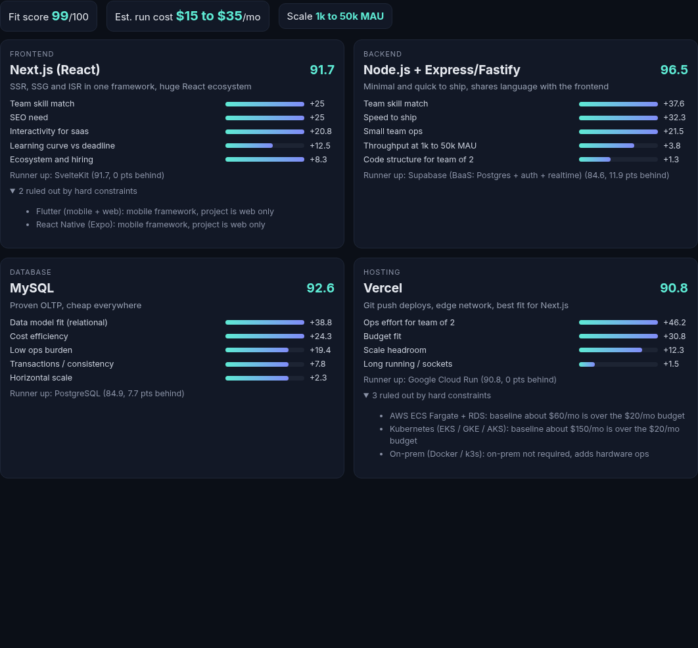
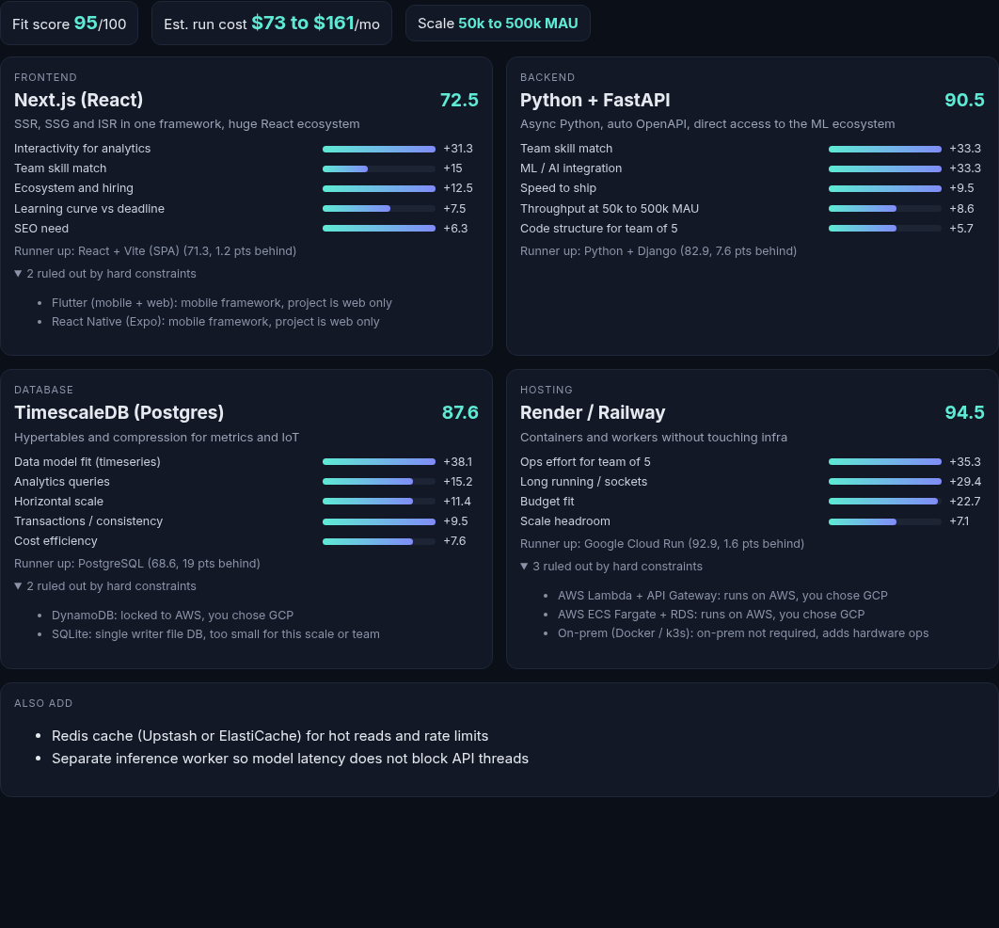
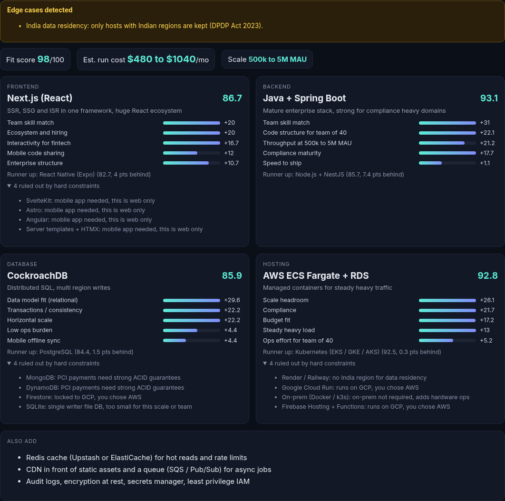
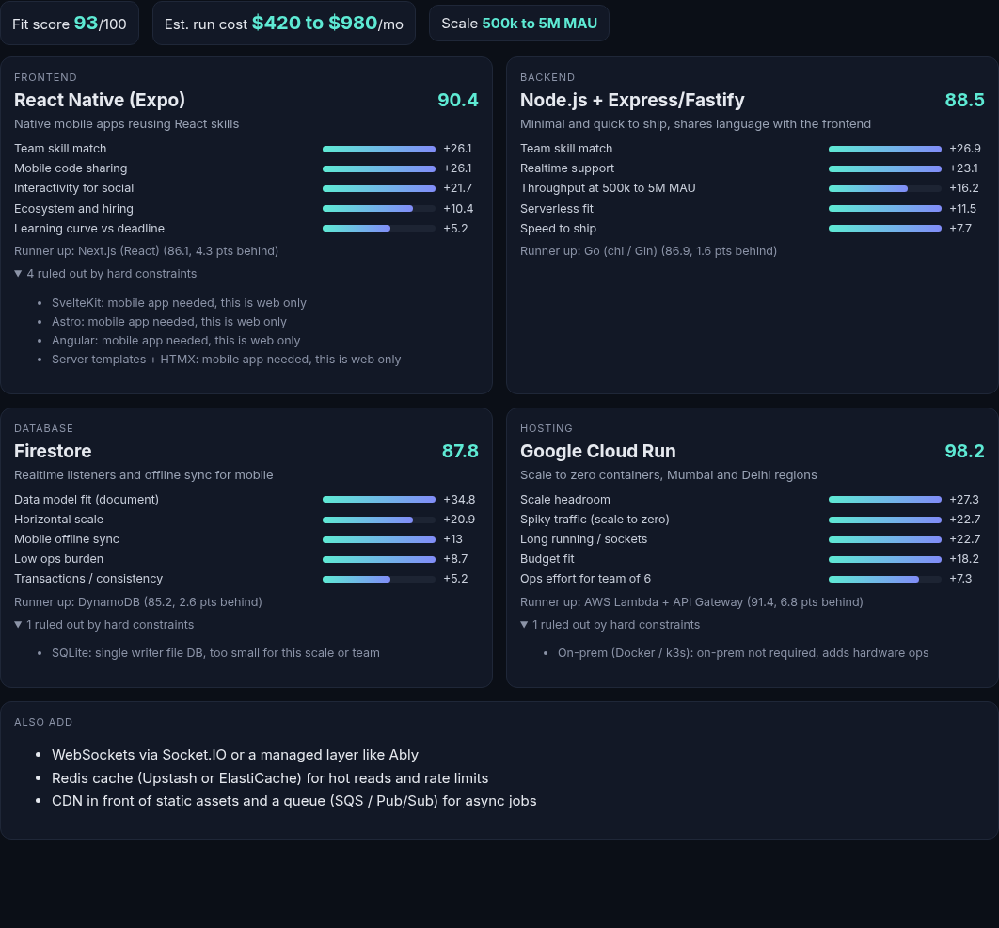
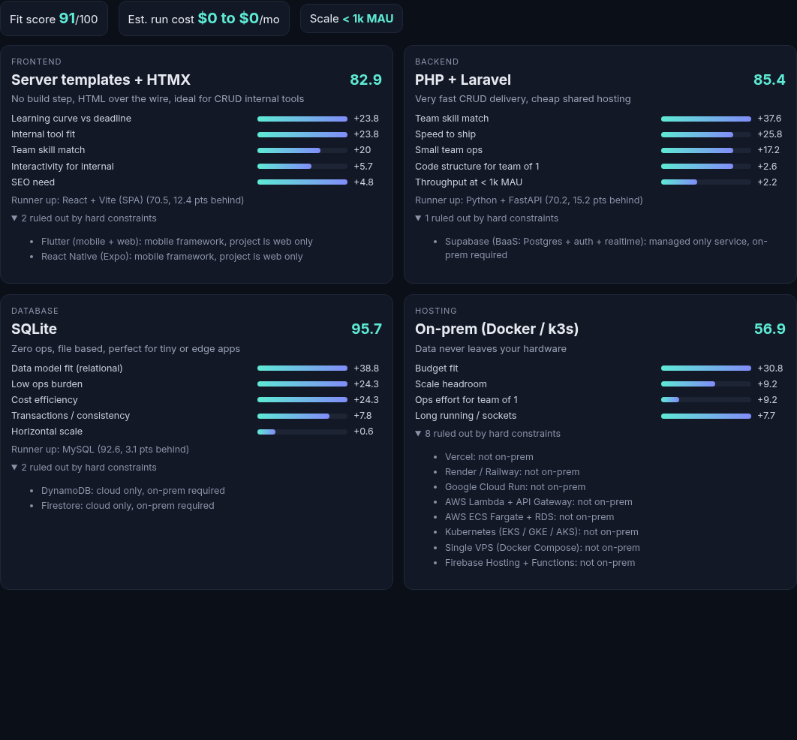
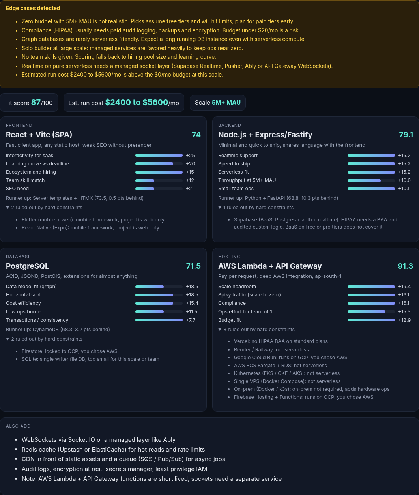

Live: https://stacksense-aman.vercel.app Code: https://github.com/amantebriwal4321/stacksense
Picking a stack is a trade off between what the team knows, what the product needs and what the budget and infra allow. Generic advice ("use MERN") ignores those limits, and LLM answers are hard to audit and change between runs.
StackSense is a deterministic rule engine. It treats some inputs as hard constraints (things that cannot be broken) and the rest as weighted preferences. Every recommendation comes with the points each factor contributed, the runner up, the options that were ruled out and why, a cost band, and warnings for conflicting inputs. It runs entirely in the browser, so it is instant and private.
| Input | Values | What it changes |
|---|---|---|
| Project type | SaaS, e-commerce, fintech, social, content, data/ML, internal tool | Interactivity weight, need for transactions, content site and internal tool fit |
| Data shape | relational, document, key value, time series, graph, geo | Biggest database factor (weight 4). Postgres gets partial credit for most shapes via JSONB and PostGIS |
| Scale | 5 MAU bands, <1k to 5M+ | Throughput and horizontal scale weights, cost band, extras (cache, CDN, queue) |
| Traffic | steady, spiky | Spiky favors scale to zero hosts and serverless friendly backends |
| Team size | 1 to 500 | Small teams weight low ops and speed. Big teams weight structure, typing and hiring pool |
| Team skills | JS/TS, Python, Go, Java, PHP, Dart | Skill match is the top weighted factor for frontend and backend. Teams ship fastest in what they know |
| Deadline | ASAP, normal, long term | Learning curve and speed to ship weights |
| Budget | USD per month | Hard filter on host baseline cost, soft cost efficiency weight, over budget warning |
| Infra | any, serverless, containers, on-prem | Hard filter on hosting kind and managed only services |
| Cloud | any, AWS, GCP | Hard filter on cloud locked DBs and hosts, alignment bonus |
| Compliance | none, PCI DSS, HIPAA | PCI removes weak ACID stores. HIPAA removes hosts and BaaS without a standard BAA |
| Data in India | yes/no | Keeps only hosts with Indian regions (DPDP Act 2023) |
| SEO, realtime, mobile, ML | flags | Turn on factor weights for SSR, sockets, mobile code sharing and ML ecosystem |
Research behind the inputs: these are the questions that drive real architecture reviews. Scale and traffic decide compute shape, data shape decides the store, team size and skill decide maintainability, and budget, cloud and compliance are hard business limits. Attribute values for each option were set from official docs and pricing pages (Section 9).
UI (public/index.html, app.js) CLI (src/cli.js)
\ /
+---- src/engine.js -----+
|
normalize -> edge case detector -> warnings
|
per layer (frontend, backend, database, hosting):
hard constraint filter -> eliminated + reason
weighted soft scoring -> score 0..100 + factor breakdown
|
cross layer search over top 4 per layer (256 combos)
compatibility penalties and bonuses
|
stack + runner ups + cost band + extras + fit score
The engine is one file with no dependencies. It works as a browser script and a Node module, so the UI, the CLI and the tests use the exact same logic. Deployed as a static site on Vercel.
8 frontends (Next.js, React + Vite, SvelteKit, Astro, Angular, HTMX, Flutter, React Native), 8 backends (NestJS, Express/Fastify, FastAPI, Django, Go, Spring Boot, Laravel, Supabase), 9 databases (PostgreSQL, MySQL, MongoDB, DynamoDB, Firestore, CockroachDB, TimescaleDB, Neo4j, SQLite), 9 hosting targets (Vercel, Render/Railway, Cloud Run, Lambda, ECS Fargate, Kubernetes, VPS, on-prem, Firebase). Each option has 1 to 5 ratings like perf, concurrency, realtime, ML fit, learning curve, ACID, horizontal scale, ops burden, plus facts like language, cloud lock in, baseline monthly cost and India region support.
Layer score = sum(weight_i x value_i) / sum(weight_i), scaled to 0..100. Weights come from the inputs. Example for backend: skill match 3.5 always, ML integration 3.5 only when ML is on, throughput 3 at 500k+ MAU but 0.5 for small apps. Factors with weight 0 drop out, so they cannot dilute the score. The UI shows each factor's share of the final points.
Stack score = 0.22 frontend + 0.28 backend + 0.25 database + 0.25 hosting, minus compatibility penalties. Backend is weighted a bit higher because it is the hardest layer to change later.
| Pair | Effect | Reason |
|---|---|---|
| SQLite on serverless host | -40 | Function file systems are ephemeral |
| Supabase with non Postgres DB | -30 | Supabase is Postgres |
| HTMX with BaaS | -20 | HTMX needs a server rendering HTML |
| Cloud locked DB on another cloud's host | -15 | Egress cost and latency |
| Slow cold start backend on FaaS | -12 | Spring and Django on functions |
| Realtime on short lived functions | -10 | Sockets need a long running process |
| Next.js on Vercel, same language front and back | bonus | Less glue, one toolchain |
If a layer's solo winner loses in this pass, the UI says so ("higher alone but lost on cross layer fit"), so the override is visible.
Host baseline plus a compute and a database estimate per scale band, shown as a low to high range. Flagged when the low end is above the budget.






| Case | Handling |
|---|---|
| Invalid values (team "abc", budget -5, unknown scale) | Normalized to safe defaults, never crashes |
| Zero budget at 500k+ MAU | Warning, cost band shown against budget |
| Compliance with budget under $20 | Warning about audit, backup and encryption costs |
| On-prem plus cloud preference | Cloud preference ignored with a note |
| Graph data on serverless | Warning, a long running DB is still needed |
| Solo dev at large scale | Managed services favored, note shown |
| Big team plus ASAP | Structured frameworks boosted |
| No skills selected | Falls back to hiring pool and learning curve |
| Mobile plus SEO | Web layer picked for SEO, mobile client listed as an extra |
| Realtime on serverless | Managed socket layer suggested |
| Spiky traffic on on-prem | Suggest sizing for peak or adding a queue |
| A layer with zero valid options | No stack returned, UI lists every eliminated option and its reason so the user knows which limit to relax |
npm test runs 10 checks: on-prem never gets a cloud host or cloud only DB, Python plus ML gives FastAPI, budget removes expensive hosts, PCI removes weak ACID stores, SQLite never lands on serverless, cloud lock is respected, impossible inputs warn instead of crashing, garbage input is normalized, India residency filters hosts, and an over constrained input returns no stack or the only valid host.
Ratings are a hand tuned snapshot from Oct 2026, cost is a rough band, Azure is not in the catalog. Next: per option sources in the UI, Azure, a "why not X" query, and export of the result as an ADR (architecture decision record).